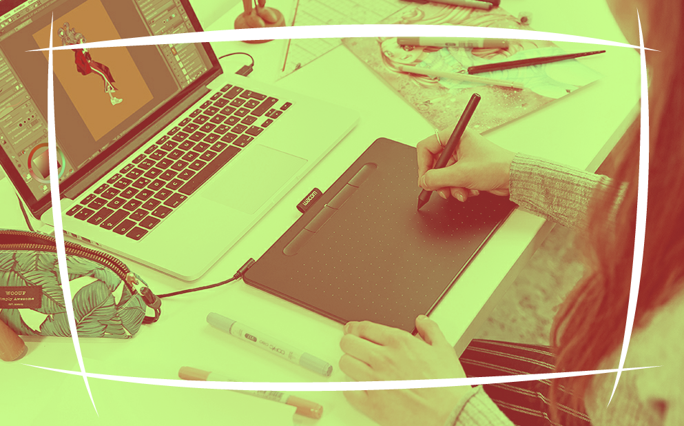
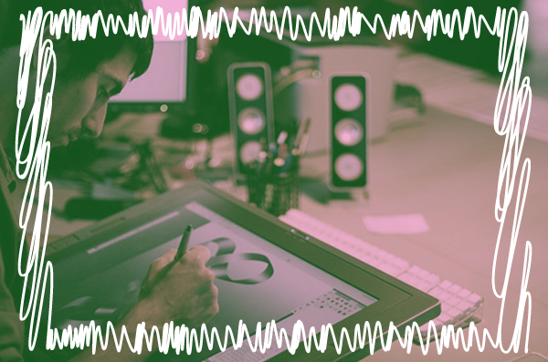

Ёмаё, ты решил стать графическим дизайнером?
Твоя мечта скоро воплатится, ты заканчиваешь художественное училище по специальности графический дизайн, где ты гуашью рисовал плакаты и учился начертанию антиквы, а ещё вы немного изучали Corel. Ёмаё, графический... Совсем скоро ты устроишься на практику в частную типографию и поймёшь, что это такое…

Прими мои поздравления ты на практике, тебе показывают рабочее место в каморке размером 2,5 метра на 2 с кондиционером, в комнатухе 2 компьютера один из которых станет твоим рабочим инструментом. И да компьютеры расположены так, что бы клиенты могли стоять за твоей спиной и тыкать тебе пальчиком в монитор. Клиенты приходят из фае, их встречают приёмщицы заказов, основная задача которых обсчитать стоимость заказа. При этом ты должен работать быстро и качественно. Клиент обращается к приёмщице, приёмщица печатает бумажку заказа, с указанием данных клиента, потом клиент попадает к тебе. Тоесть, сначала клиент объясняет что ему нужно приёмщице, потом приходит с бумажкой и объесняет что ему нужно тебе.
Иногда выясняется, что клиент уже делал тут заказ и его интересует он же, но с небольшими правками.К примеру ему надо подправить номер в визитке. Ну разве это сложно, найти где-то там файл клиента, который он делал 3 года назад, открыть его и исправить номер телефона? Если в его файле указаны его данные, это не сложно и у тебя уйдёт на работу минут 10-15 времени. И запомни самое главное, важна не столько твоя работа, сколько колличество визиток, которые хочет заказать клиент. Потому что визитка это двигатель рекламы, она помщается в карман и её можно всучить кому угодно при контакте!
Потом к тебе приводят нового клиента, который к примеру решил заказать вывеску на свою открывающуюся каморку по оказанию услуг ремонта техники, он с женой и ребёночком, поэтому командует его жена. Ёмаё, она садится у тебя за спиной и наблюдает за твоими действиями, ты уточняешь размеры, вводишь текст вывески, корректируешь цвет под неусыпным руководством клиента... В лучшем случае ты справишься минут за 15 - полчаса, потому что клиента предупредили, чем дольше ты работаешь с дизайнером, тем дороже.
Прекрасно, ты справился с задачей, клиент доволен, и ты печатаешь ему принт макета, берёшь с него подпись и указываешь время потраченное на разработку макета. Потом клиентов нет, ты сидишь, скучаешь, потому что второй дизайнер работает с клиентом, потом идёшь курить. При этом тебе компостируют мозг, тем, что ты часто куришь ( Ты покинул рабочее место, а вдруг придёт клиент? ) Возвращаешься, а там тебя уже ждёт учительница географии младших классов, которой нужен стенд с картой. Она хочет сделать красивый стенд, но при этом незнает точно какой, и у неё ограниченный бюджет, который она выбивала с директора школы, а из своего кармана она доплачивать естественно не хочет. При этом она показывает тебе школьный атлас, с физической картой мира и картинками общемировых, историко-культурных ценностей Юнеско, в общем надо "как здесь"! Ты задачу понял, но где же взять карту высокого разрешения для полиграфической печати? Так как тебе надо найти в интернете около 30 картинок достопримечательностей, и обозначить их месторасположение на карте, потом придумать стенд, на котором карта будет размещена и ты понимаешь, что за 15-30 минут ты несправишься, а если делать это всё при клиенте, который постоянно тебя отвлекает, задаёт вопросы, размышляет на тему как будет лучше, и при этом ещё не совсем определился, физическая карта нужна или политическая, потому, что если политическая, то изменилось пара столиц стран, в Казахстане и ещё где-то там, и их надо заменить ( подправить ).Заодно ты по приколу интересуешься, какая политическая карта мира ей подойдёт - с РФ раскрашенной в розовый цвет или в коричневый, и интересуешься у неё, кто решает в какой цвет красить страну. В комнатушке становится жарко, включается кондиционер. А клиенту вы предлагаете придти завтра, что бы он оценил макет. Есть одна тонкость, клиент производит оплату после согласования макета. То есть ты как дизайнер работаешь на свой страх и риск ( в варианте если у вас сделка ), а полиграфическое предприятие печатает продукцию только после оплаты. То есть по бумажке выданной приёмщицей у тебя есть заказ, а по факту, его ещё нет потому, что не произведена оплата. Кондицеонер вдруг начинает течь, вода капает на твой рабочий стол, брызги от капель попадают на клавиатуру и монитор...

После устранения аварийной ситуации и перекура (ты слишком часто куришь!), ты принимаешься искать картинки в интернете по 30 историкокультурным точкам мира согласно списку Юнеско, а заодно ищешь изображения карты с как можно большим разрешением изображения ( ну ты же вкурсе что при низком качестве и качество принта будет в мыле? ) Ты продолжаешь заниматься заказом, при этом всегда есть вероятность, что придёт новый клиент, и будет тебе тыкать пальчиком в монитор при создании к примеру рекламного бланка для почтовых ящиков. И соответственно ты работаешь в режиме многозадачности, при этом у тебя висит мыло канторы и вайбер, которые надо переодически просматривать и взаимодействовать с клиентами, к примеру выполнить макет наклейки, который надо согласовывать онлайн, так что ты ещё и менеджер по совместительству. В современном мире понятие дизайнер связывается с многими аспектами деятельности направленной на создание:
- Полиграфической продукции (компьютерная графика Adobe Photoshop, Corel)
- Компьютерной графики (иллюстрации, изображения в том числе для компьютерных игр и создание 3d моделей - Painter 3DMAX и т.п.)
- Компьютерной графики (баннеры и реклама для web Adobe Photoshop, Corel)
- Компьютерной графики ( создание 3D принтов дизайнов интерьеров и экстерьеров - 3dMAX)
Ну ёмаё, хочешь быть дизайнером.? 19.10.2019 00:28
|